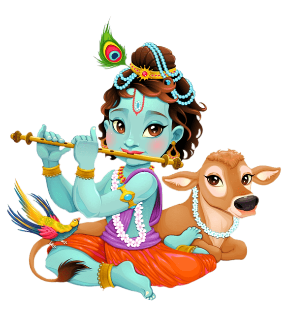
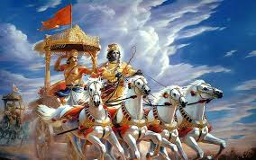

Childhood of Lord Krishna

Lord Krishna is one of the most beloved deities in Hinduism. His childhood in Vrindavan
is filled with playful acts, miracles, and deep love from devotees. He is famously known
for stealing butter and playing the flute, enchanting everyone around him.
Teachings from the Bhagavad Gita

In the Mahabharata, Lord Krishna delivered the Bhagavad Gita to Arjuna on the battlefield of Kurukshetra.
His teachings emphasize duty (dharma), devotion (bhakti), and selfless action (karma yoga),
which continue to guide millions of people around the world.